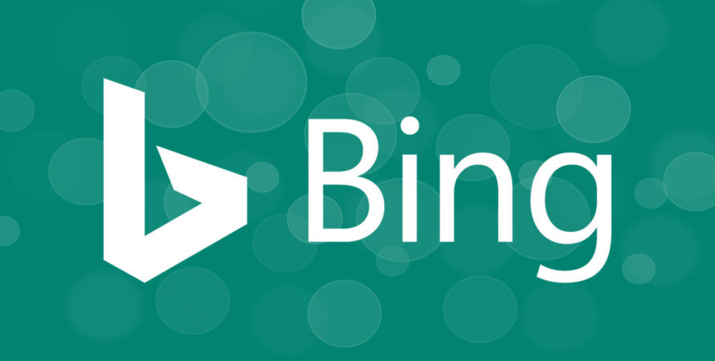
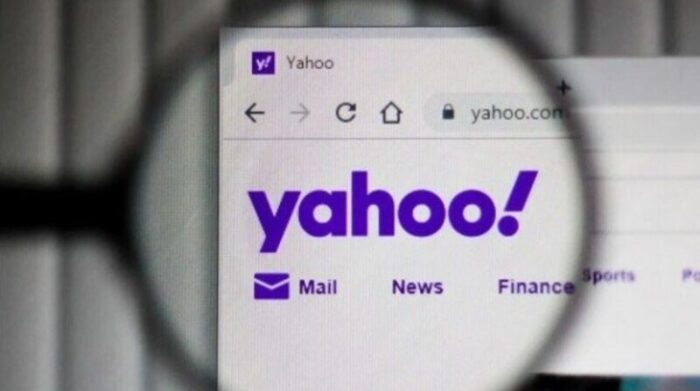

Google, LLC es una compañía principal subsidiaria de la estadounidense Alphabet
cuya especialización son los productos y servicios relacionados con internet,
software, dispositivos electrónicos y otras tecnologías. El principal producto
de Google es el motor de búsqueda de contenido en Internet del mismo nombre,
aunque ofrece también otros productos y servicios como la suite ofimática Google
Drive, el correo electrónico llamado Gmail, sus servicios de mapas Google Maps,
Google Street View y Google Earth, el sitio web de vídeos YouTube y otras
utilidades web como Google Libros, Google Noticias, Google Chrome y la red
social Google+, este último sacado fuera de línea en el primer cuatrimestre de
2019. Por otra parte, lidera el desarrollo del sistema operativo basado en Linux
Android, orientado a teléfonos inteligentes, tabletas, televisores y automóviles,
y de gafas de realidad aumentada, las Google Glass. Su eslogan es «Do the Right
Thing» («Haz lo correcto»).

Microsoft Bing (anteriormente Bing, Live Search, Windows Live Search y MSN Search)
es un buscador web de Microsoft. Presentado por el antiguo director ejecutivo de
Microsoft, Steve Ballmer, el 28 de mayo de 2009 en la conferencia All Things
Digital en San Diego, fue puesto en línea el 3 de junio de 2009 con una versión
preliminar publicada el 1 de junio de 2009.
Cambios notables incluyen la lista de sugerencias de búsqueda en tiempo real y una
lista de las búsquedas relacionadas (llamado "Panel de explorador" en el lado
izquierdo de los resultados de búsqueda), basado en tecnología semántica de
Powerset que Microsoft compró en el 2008.
El 29 de julio del 2009, Microsoft y Yahoo! anunciaron que Bing reemplazaría a
Yahoo! Search. Este cambio fue implementado a principios de 2012.

Yahoo! es una empresa de tecnologia con sede en Estados Unidos que posee un portal
de Internet, un directorio web y una serie de servicios tales como el popular
correo electrónico Yahoo! Su propósito es "ser el servicio global de Internet más
esencial para consumidores y negocios". Fue fundada en enero de 1994 por dos estudiantes
de postgrado de la Universidad de Stanford, Jerry Yang y David Filo. Yahoo! se constituyó
como empresa el 2 de marzo de 1995 y comenzó a cotizar en bolsa el 12 de abril de 1996.
La empresa tiene su sede corporativa en Sunnyvale, California, Estados Unidos. Yahoo! fue
uno de los pioneros de la era inicial de Internet en la década de 1990.
De acuerdo con los proveedores de análisis web de terceros Alexa y SimilarWeb, Yahoo! fue
el sitio web de noticias y medios de comunicación más leído, con más de 7 mil millones de
visitas por mes, clasificándose como el sexto sitio web más visitado a nivel mundial en
2016.
El 25 de julio de 2016 fue anunciada la compra de Yahoo por parte de Verizon.
En 2017 Verizon adquirió la mayor parte del negocio de Internet de Yahoo por US$4,48 mil
millones,excluyendo sus participaciones en Alibaba Group y Yahoo! Japan que fueron
transferidos a la compañía sucesora de Yahoo, Altaba.
